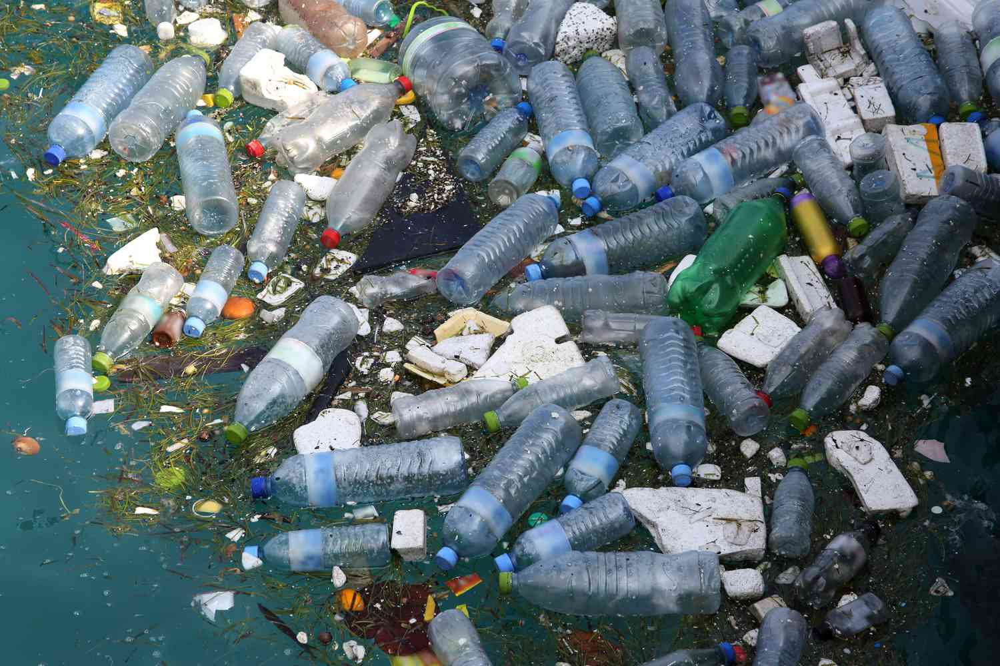
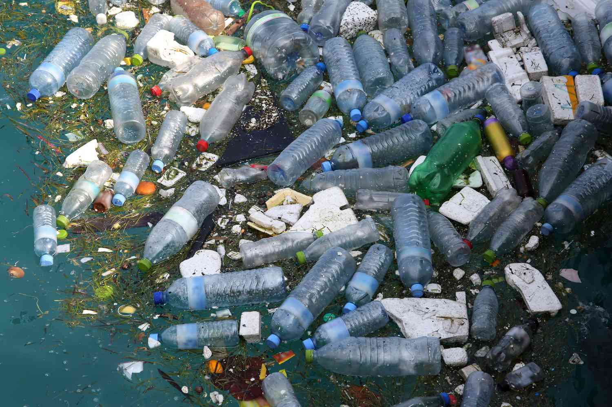

Plastic waste generated from industrial use can be attributed to various factors and practices within industrial processes. Here are some common causes:
1. Packaging Materials:
Excessive Packaging: Industries often use plastic for packaging due to its durability and cost-effectiveness. However, excessive or non-essential packaging contributes significantly to plastic waste.
2. Single-Use Plastics:
* Disposable Products: Industries frequently use single-use plastic items like bags, containers, and utensils for convenience. These items are often discarded after a single use, contributing to plastic pollution.
3. Production Processes:
Resin Pellets Loss: Plastic resin pellets, the raw material for many plastic products, can be lost during manufacturing processes. These small plastic pellets, if not properly managed, can end up in water bodies and contribute to microplastic pollution.
4. Obsolete Equipment and Products:
Waste from Production Lines: Defective or outdated products, along with unused raw materials and by-products from manufacturing processes, contribute to plastic waste.
5. Supply Chain Issues:
Transport Packaging: Plastic is commonly used for transporting goods within the supply chain. Packaging materials, such as bubble wrap and shrink wrap, contribute to plastic waste.
6. Lack of Recycling Infrastructure:
Limited Recycling Facilities: In some regions, there might be a lack of proper recycling facilities for industrial plastic waste. This can result in more plastic being disposed of in landfills or incinerated.
7. Lack of Awareness and Regulation:
Insufficient Regulations: In some cases, lax regulations or poor enforcement of existing regulations can lead to improper disposal practices by industries.
8. Inadequate Waste Management Practices:
Poor Waste Management: Inadequate waste management practices within industrial facilities can lead to the improper disposal of plastic waste.
9. Product Design:
Non-Recyclable Products: Some industrial products are designed without considering recyclability, making it difficult to recycle or repurpose the materials.
10. Unintentional Loss:
Accidental Spills: Accidental spills during the transportation or handling of plastic materials can contribute to plastic waste in the environment.
Addressing the issue of plastic waste from industrial use requires a combination of improved regulations, sustainable practices, responsible waste management, and advancements in materials and product design to reduce overall plastic consumption.
 
